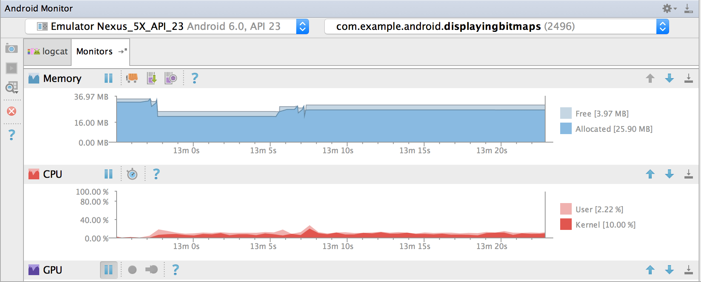
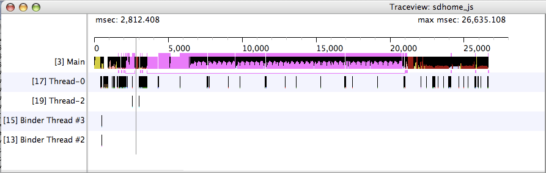
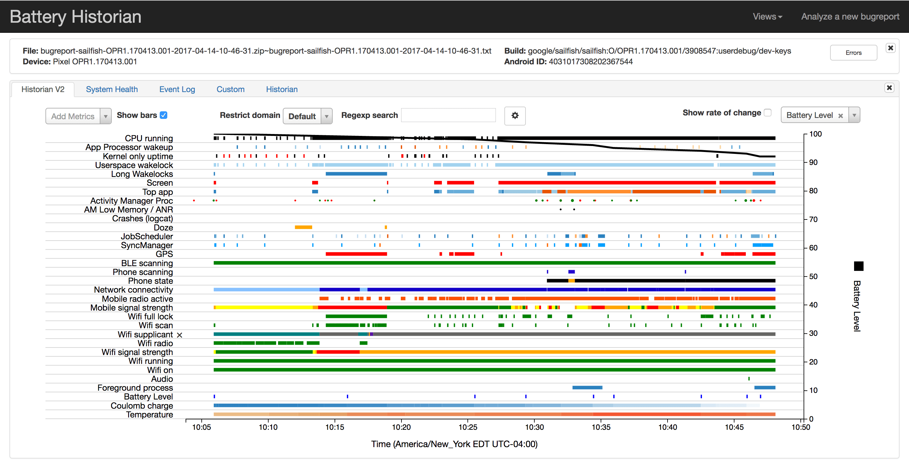
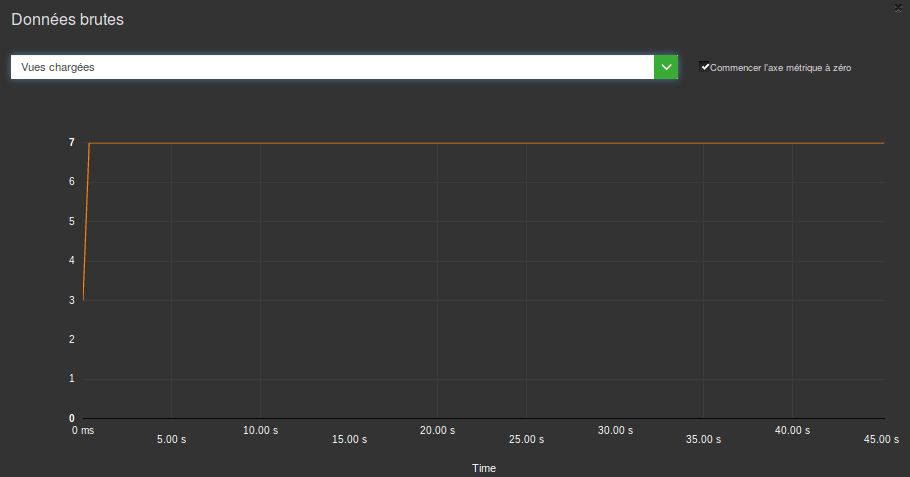

Vous le savez, une application de qualité ne doit pas consommer trop de ressources sur le smartphone de l’utilisateur. C’est nécessaire à son adoption et à son utilisation.
Vous avez donc décidé de vous retrousser les manches et de contrôler cette consommation de ressources (CPU, mémoire, data…), l’énergie, la taille de l’application.
Vous maîtrisez les bonnes pratiques et le langage de développement, mais l’enfer est pavé de bonnes intentions ! Quelle est la boîte à outils pour bien commencer ? Passons en revue les meilleurs outils pour le développeur Android.
Android Studio
Android Studio intègre maintenant de nombreux outils pour suivre la consommation de ressources de votre application. L’avantage est l’intégration de l’outil dans votre environnement de développement. On ne peut pas être plus proche de votre travail au jour le jour. Cependant, il faudra aller chercher dans les sous-menus et penser à suivre les métriques.
La dernière version intègre maintenant la possibilité de profiler le réseau et même les librairies comme OKHTTP :

Les outils du SDK : Traceview
Traceview permet de visualiser les appels de méthodes, le temps passé dans chacune… L’outil est très puissant mais vous passerez sûrement du temps à analyser les données. Il est possible que vous vous perdiez dans la hiérarchie des appels. Cependant cet outil est incontournable pour analyser des problèmes de performance (entre autres).

Les outils du SDK : Systrace
Systrace est un autre outil de profiling très puissant. Il permet de visualiser des informations sur le matériel (le travail du CPU avec la répartition sur tous les CPUs) mais aussi des packages d’informations Android (RenderThread, Event…). Comme tout bon outil de profiling, il présente beaucoup d’informations. L’inconvénient est qu’il faut prendre le temps de comprendre toutes ces informations, ce qui peut facilement se révéler assez chronophage.

Les outils du SDK : Dumpsys
Dumpsys est un module en ligne de commande du système Android. De nombreuses informations peuvent être obtenues : informations sur les vues, sur la base … L’inconvénient de cette solution est la complexité des métriques, donc la nécessité de passer du temps pour analyser et relancer les mesures.
Par exemple, taper la ligne suivante dans la ligne de commande pour avoir les informations sur les traitements graphiques :
adb shell dumpsys gfxinfo

Les outils développeur dans le système
Si vous avez activé le mode développeur, vous aurez des outils qui vous permettent de mesurer certaines métriques comme la performance d’affichage, le CPU… Ce mode est très intéressant mais la nécessité de devoir effectuer des actions manuellement sur le téléphone en limite la puissance.
A noter, la possibilité de mettre en surbrillance des zones qui sont dessinées. Cela permet par exemple d’identifier des redraws trop fréquents.
Les outils Android non intégrés dans le SDK : Battery Historian
Battery historian est un outil qui va visualiser les informations issues de dumpsys batterystats. La décharge batterie est donc visible en parallèle des traitements système et de l’usage des composants. Vous pourrez ainsi détecter des problèmes de fuite d’énergie. La limite est qu’il est nécessaire de faire tourner l’application plusieurs minutes ce qui augmente la complexité d’analyse :on est proche d’un outil de profiling avec la complexité associée.

Les outils d’automatisation : GREENSPECTOR
Évidemment nous ne pouvons pas passer en revue ces outils sans parler de GREENSPECTOR. Les outils dont nous venons de parler sont puissants, mais leur puissance se paie par leur complexité importante, qui demande une expertise certaine pour bien en retirer les informations recherchées. Or très souvent, ces outils ne sont invoqués qu’en cas de crise, quasiment jamais de façon régulière.
Pourtant il semble intéressant de réaliser des mesures de consommations de ressources tout au long du développement et pour tous les développeurs. C’est pour cela que GREENSPECTOR est utilisable en intégration continue. Au-delà des métriques usuelles, nous avons intégré une partie des outils experts (comme Dumpsys) directement dans GREENSPECTOR. L’objectif est d’allier la simplicité de l’interface, pour une surveillance en continu, et l’apport d’informations plus « pointues » en cas de besoin.
Voici par exemple une courbe sur les vues Android lors du lancement de l’application suite à un test en intégration continue :

Cette manière de mesurer nous permet de détecter facilement des problèmes de consommation. L’analyse plus poussée pourra ensuite être faite avec les autres outils mentionnés si elle s’avère nécessaire.